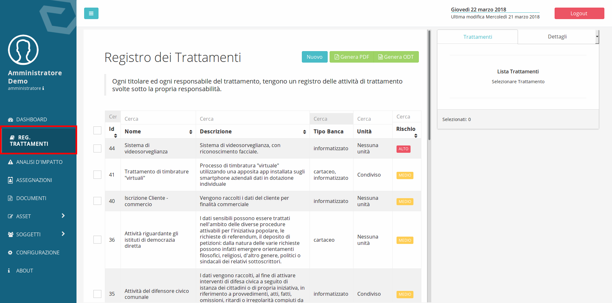
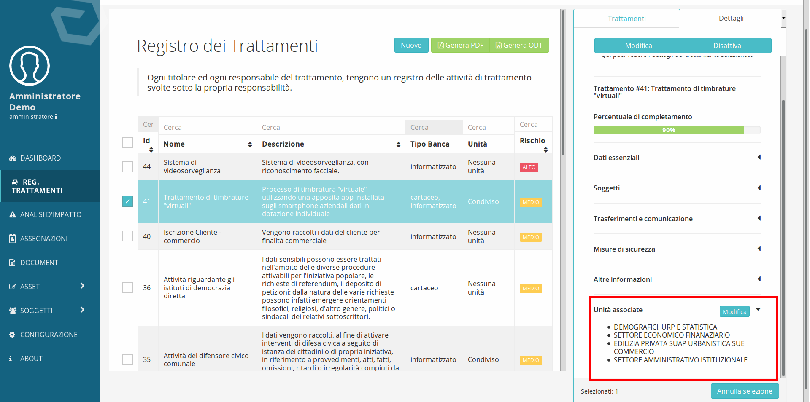

Il registro dei trattamenti¶
Il registro dei trattamenti costituisce la pietra angolare su cui poggiano molti degli adempimenti richiesti dal Regolamento EU 679/2016 (GDPR) quali: analisi d’impatto sulla protezione dei dati, la notifica di violazioni sui dati personali, la distribuzione delle responsabilità.
Il registro dei trattamenti è composto dall’insieme dei trattamenti per il quale l’ente è Titolare o è Responsabile.
Per accedere al registro dei trattamenti in DPM è sufficiente fare clic sulla voce di menu Reg. Trattamenti:
{kind=link}
Caratteristiche e elementi del registro dei trattamenti¶
I trattamenti possono essere disattivati, questo permette di inserire attributi ed elementi del trattamento ed eventualmente, fare un’analisi di impatto, in una fase precedente all’implementazione del trattamento nella realtà organizzativa dell’ente e quindi al loro inserimento nel registro.
Per disattivare un trattamento è sufficiente spostare il cursore che si trova nella prima sezione del trattamento:
Un’attività di trattamento è composta da cinque sezioni nelle quali sono racchiuse tutte le informazioni correlate con l’attività di trattamento.
Le informazioni richieste in ogni trattamento sono quelle definite nell’articolo 30 del regolamento 679/2016 con l’aggiunta di alcune informazioni funzionali all’implementazione di misure di sicurezza organizzative (quali la definizione di un responsabile interno) e alla generazione delle informative (quali la presenza di meccanismi di profilazione e meccanismi decisionali automatizzati).
Nel dettaglio, le informazioni correlate ad ogni attività di trattamento sono suddivise nelle schede:
| Dati esenziali |
|
|||
| Soggetti |
|
|||
| Trasferimenti e comunicazioni | Destinatari | Intra UE | ||
| Extra UE | Base legale per export di dati | |||
| Misure di sicurezza | Misure di sicurezza organizzative | |||
| Altro |
|
|||
Molte delle informazioni che possono essere inserite durante la compilazione del registro derivano da quanto inserito nelle voci dei sotto-menu a cui è possibile accedere dalle voci del menu, Asset e Soggetti.
Nel sotto menu Asset è possibile definire:
| Asset |
|
Nel sotto menu Soggetti è possibile definire :
| Soggetti |
|
L’inserimento delle attività di trattamento si configura come un percorso che accompagna l’utente nella compilazione dei campi necessari per definire i trattamenti.
Correlazione trattamento Unità¶
La correlazione dei trattamenti alle unità è essenziale se si intende effettuare una gestione dei trattamenti in maniera distribuita, raccogliendo quindi le informazioni concernenti i trattamenti dai soggetti posti in posizione apicale nelle diverse unità organizzative.
Un trattamento può essere correlato ad una o più unità. Per correlare un trattamento a delle unità occorre selezionare il Registro dei trattamenti dal Menu principale, selezionare un trattamento, espandere l’ultima voce della sezione Dettagli del trattamento denominata Unità associate posta sul lato destro dell’interfaccia:
{kind=link}